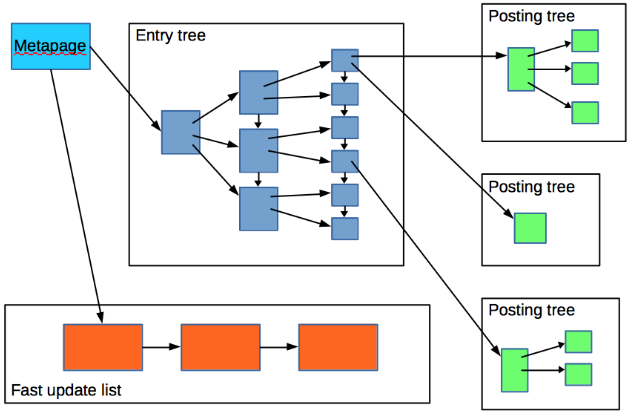
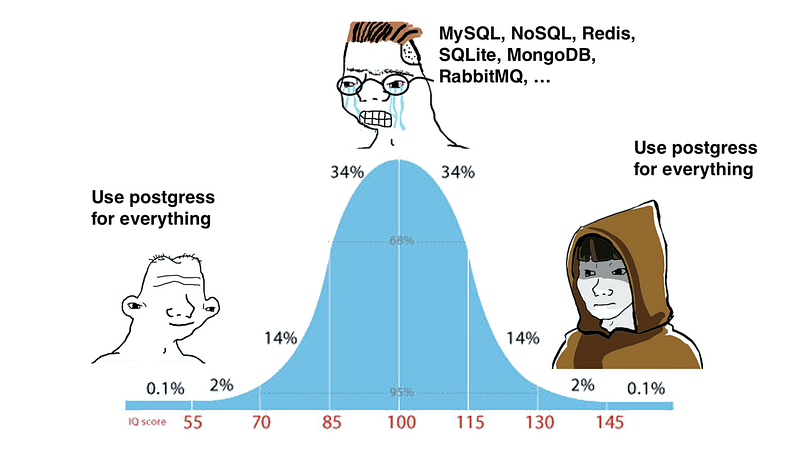

Why Overcomplicate Search? Postgres Has You Covered!
Most developers default to Elasticsearch for full-text search, assuming they need a separate search engine. But what if I told you that PostgreSQL can handle text search just as well, without extra infrastructure, syncing issues, or cost?
Postgres comes with built-in full-text search, using tsvector and tsquery, allowing you to implement a fast, scalable search experience directly within your database.
Why Choose Postgres for Text Search?
Elasticsearch is great, but it comes with following downsides :
- Extra Infrastructure : A separate cluster to manage.
- Data Syncing Issues : Keeping Postgres and Elasticsearch in sync is a hassle.
- Higher Costs : More servers, more complexity.
Whereas Postgres, on the other hand:
- Works Out of the Box : No extra tools needed.
- Keeps Data Consistent : No need for external syncing.
- Supports ACID Transactions : Your searches stay reliable.
How tsvector Works (With Code!)
Postgres full-text search uses tsvector (to store text in a searchable format) and tsquery (to find matches).

Create a Searchable Table
CREATE TABLE articles (
id SERIAL PRIMARY KEY,
title TEXT,
content TEXT,
tsv_content TSVECTOR GENERATED ALWAYS AS (to_tsvector('english', content)) STORED
);Optimize Search Performance with a GIN Index
Without an index, text search queries can be slow, especially on large datasets. The solution? A Generalized Inverted Index (GIN).
Add a GIN Index
CREATE INDEX idx_search ON articles USING GIN(tsv_content);Why GIN?
Unlike B-tree indexes, which work best for exact matches, GIN indexes efficiently store and search text tokens, making full-text search much faster.
Improve Search Results with ts_rank
Just finding matches isn’t enough, your search results should be ranked based on relevance!
SELECT id, title, ts_rank(tsv_content, to_tsquery('english', 'database & performance')) AS rank
FROM articles
WHERE tsv_content @@ to_tsquery('english', 'database & performance')
ORDER BY rank DESC;This makes it easy to power search bars and rank the most relevant results first.
When Should You Still Use Elasticsearch?
In my opinion, go for Elastic search if you need the following
- Distributed Search over billions of documents
- Fuzzy Matching and autocomplete features
- Complex Aggregations & Analytics
Then Elasticsearch is still a great option. But for most web apps, Postgres gets the job done faster and cheaper.
Conclusion
“ Stop over-engineering! If you’re already using Postgres, try tsvector and a GIN index first before reaching for Elasticsearch. It might save you time, money, and a lot of headaches. “

What do you think? Have you used Postgres for full-text search before? Let’s discuss in the comments!
Don’t forget to follow me on Medium for more such content and give a clap if you like it.